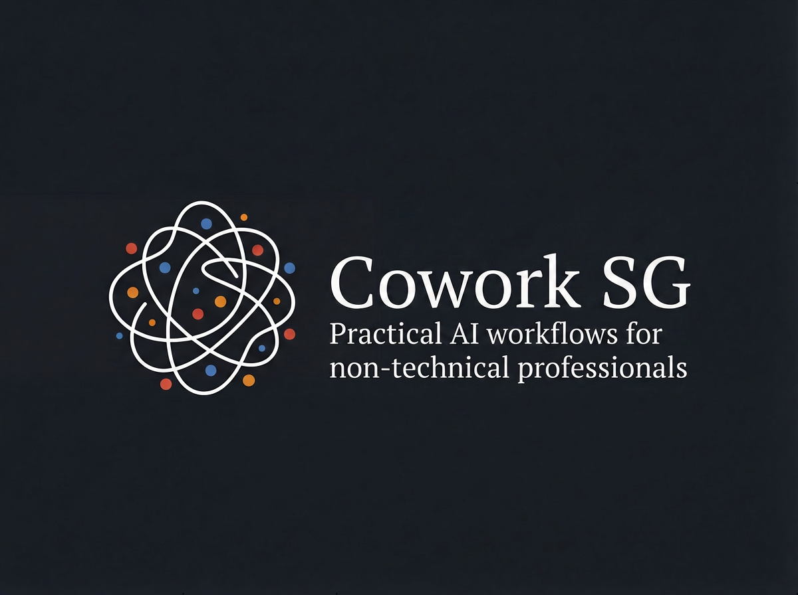
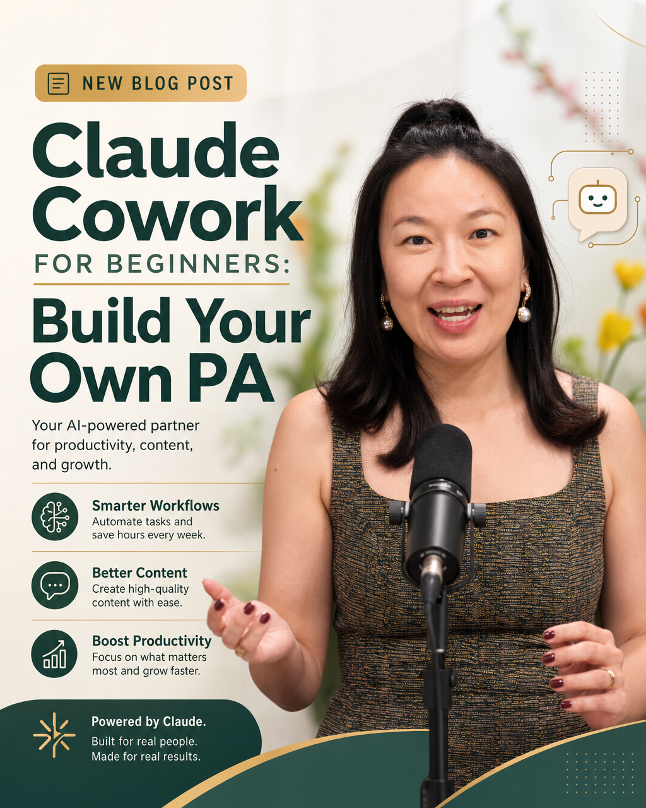

Practical guides written by non-technical professionals, for non-technical professionals. No jargon. No gatekeeping. Always free.

One week of using Claude Code as a non-techie completely rewired how I work. Here's why it makes ChatGPT feel like a toy — and what to actually build with it.
Read post → ~9 min
How to set up Claude Cowork as a personal AI assistant that remembers, writes in your voice, and runs your operating system — no coding needed.
Read post → ~9 minMost professionals are still using Claude and ChatGPT the same way they did two years ago. Claude Cowork changes the model entirely — here's what it actually does and why it matters.
Read post → ~7 minFive real Claude Cowork workflows non-techies can copy today — file management, scheduled research, local file analysis, and agentic browser tasks.
Read post → ~8 minWhy selling AI-powered services beats selling AI software right now — and how non-techies are quietly winning the arbitrage window.
Read post → ~8 minAnthropic dropped a Claude Certified Architect exam. Here's the real breakdown of all 5 domains and what actually matters for passing it.
Read post → ~9 minA non-techie's walkthrough of Claude Cowork — what it does, how it's different from Claude Chat and Claude Code, and where it actually shines.
Read post → ~9 minA practical breakdown of Claude Cowork's core capabilities — what's different from Claude Chat, file access, persistent memory, connectors, and skills.
Read post → ~8 minThe biggest mistake non-techies make with Claude Cowork is prompting it like Claude Chat. Here's the shift that changes everything.
Read post → ~6 minHook up your personal WhatsApp to Claude AI — sending messages, reading replies, running personalised outreach — all from inside Claude desktop. Step-by-step setup included.
Read post → ~7 minHow a non-techie went from zero to production with Claude Code in 5 hours — plus the setup mistakes nobody warns you about.
Read post → ~9 min